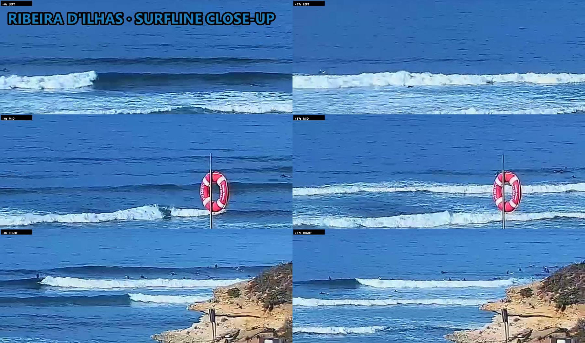
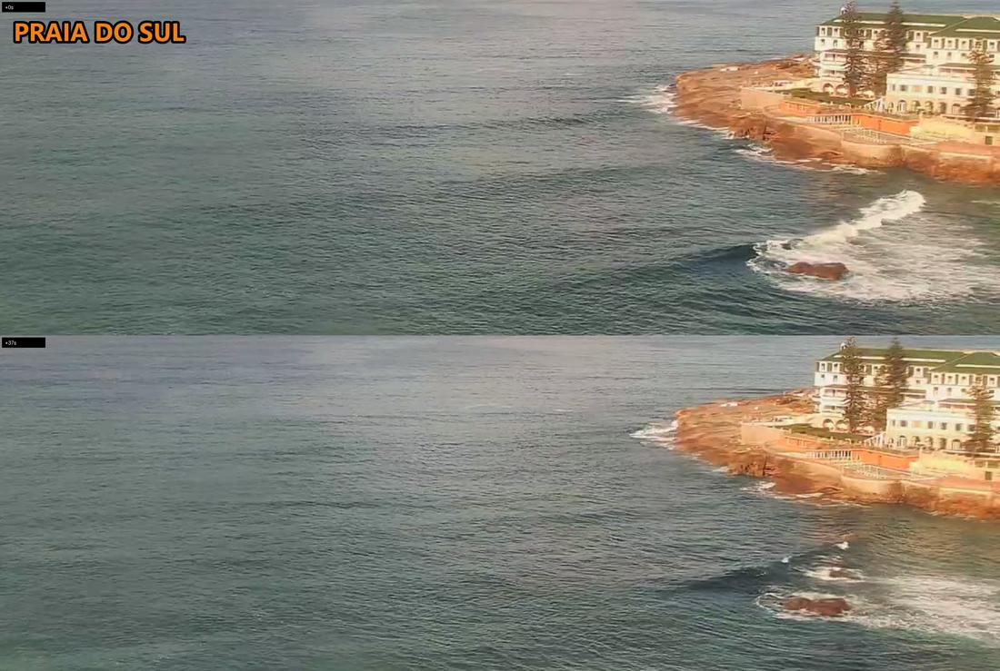
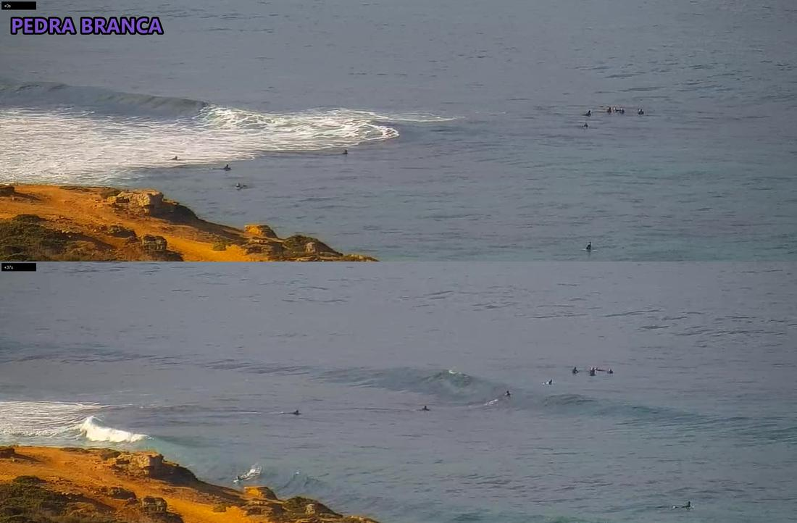
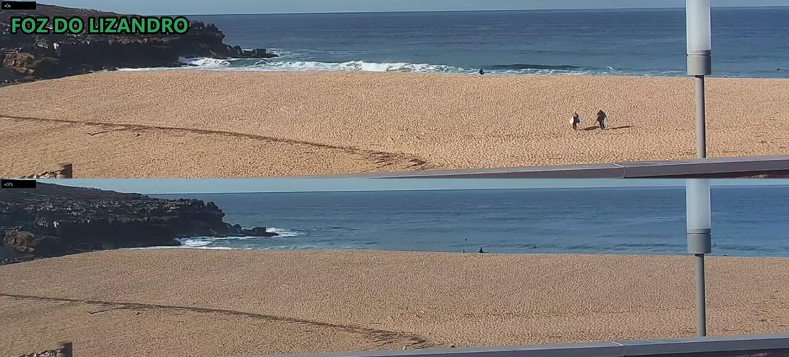

Ribeira
POOR-TO-FAIR0.6–1.1 m★★★☆☆
18 surfers
clean lines peeling down the point, riders up; L2 M1 R9 / L3 M3 R12 -> ~18
morning slot · run 341
| Ribeira | ★★★☆☆ | 0.6-1.1m | |
|---|---|---|---|
| Norte | ★★☆☆☆ | 0.6-1.1m | |
| Sul | ★½☆☆☆ | 0.6-1.1m | |
| Pedra | ★★★☆☆ | 0.6-1.1m | |
| Lizandro | ★★½☆☆ | 0.6-1.1m |
| Ribeira | clean lines | +1★ | 18+ busy |
|---|---|---|---|
| Sul | flat, tiny | -½★ | 0 |
| Pedra | peeling peak | +1★ | 10+ packed |
| Lizandro | shorebreak | +½★ | 4+ busy |




0.6–1.1 m★★★☆☆
18 surfers
clean lines peeling down the point, riders up; L2 M1 R9 / L3 M3 R12 -> ~18
0.6–1.1 m★★☆☆☆
surfers unclear
no cam frames this run; forecast only
0.6–1.1 m★½☆☆☆
0 surfers
tiny, barely breaking except on the rocks; nobody out on detail crop
0.6–1.1 m★★★☆☆
10 surfers
peeling peak off the reef, waves being ridden; ~10 out, pack on the outside
0.6–1.1 m★★½☆☆
4 surfers
small shorebreak, a few lines; ~4 out, approximate (wide cam)